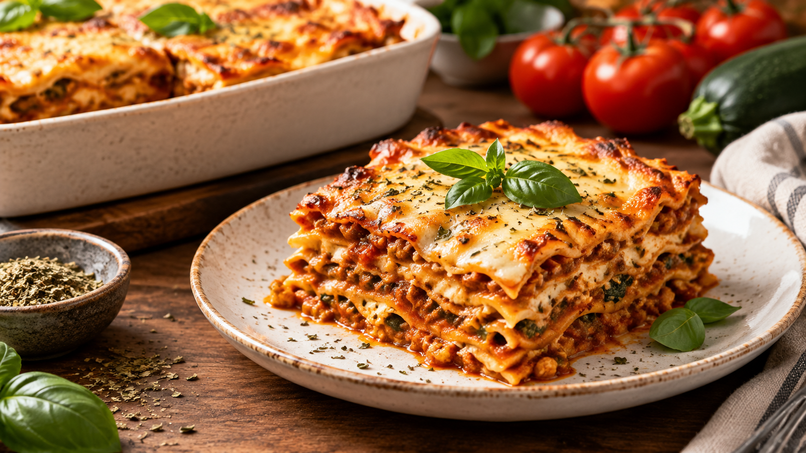
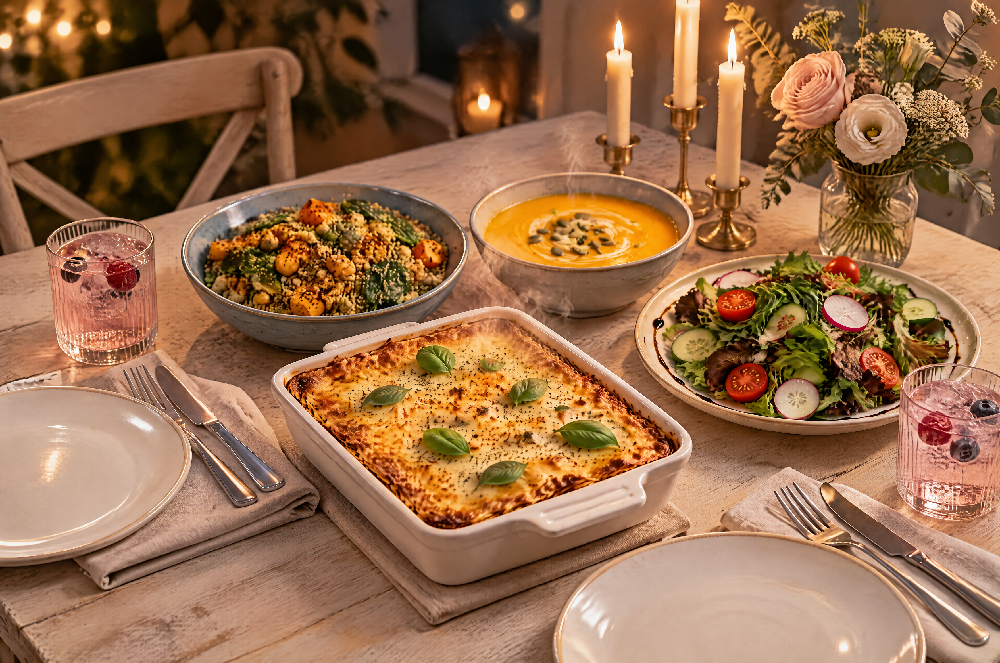
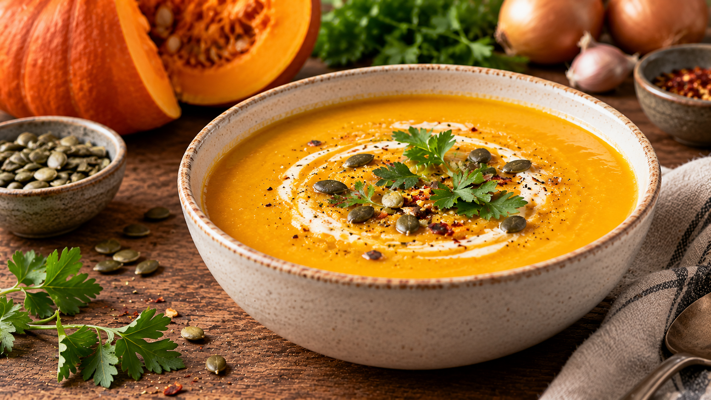
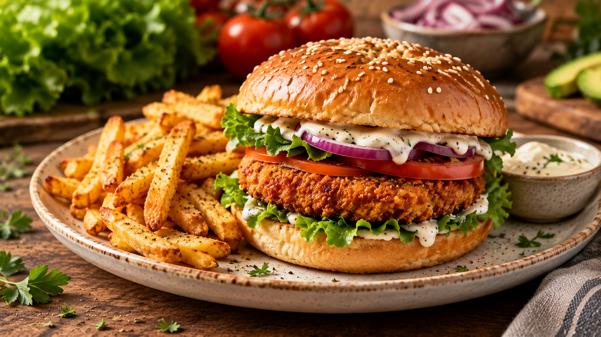

Odin Recipes


SEASONAL FAVORITE
Vegan Pumpkin Soup
A creamy, warming pumpkin soup with aromatic spices and roasted pumpkin seeds.
View Recipe →
CRISPY & DELICIOUS
Crispy Vegan Chicken Burger
A crunchy plant-based chicken burger with fresh lettuce and creamy vegan sauce.
View Recipe →